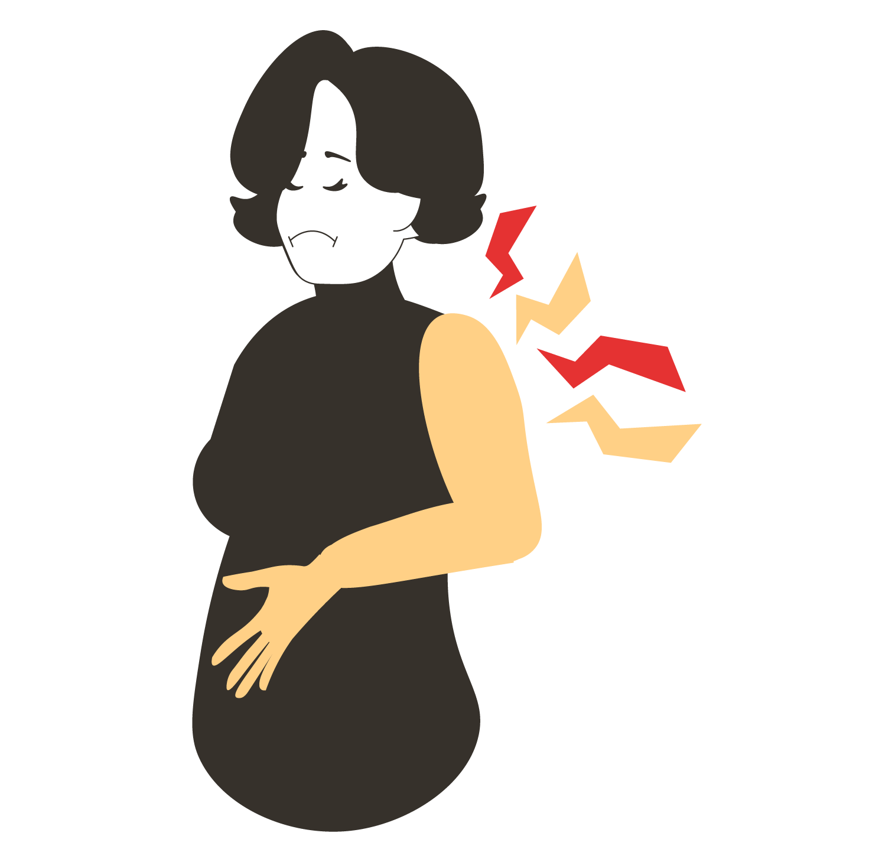

La Enfermedad de Parkinson (EP) es una enfermedad neurodegenerativa del sistema nervioso central, caracterizada por la muerte progresiva de las neuronas dopaminérgicas
ubicadas en la sustancia negra del cerebro. Estas neuronas desempeñan un papel crucial en el control motor, y su degeneración provoca dificultades significativas
en el movimiento y otros síntomas relacionados.
Además de los síntomas motores como temblor, rigidez y bradicinesia, los pacientes con Parkinson suelen experimentar síntomas
no motores como trastornos del sueño, depresión, ansiedad, deterioro cognitivo y alteraciones gastrointestinales, que también
impactan significativamente su calidad de vida.
La pérdida neuronal en la enfermedad de Parkinson provoca una marcada disminución en la disponibilidad de dopamina,
el principal neurotransmisor encargado de regular el movimiento. Esta reducción afecta el funcionamiento de las estructuras
cerebrales responsables del control motor, generando alteraciones significativas en la movilidad de quienes la padecen.
La progresión de la enfermedad varía entre los pacientes: en algunos casos, el deterioro avanza lentamente, mientras
que en otros progresa con mayor rapidez. En términos generales, los trastornos motores iniciales tienden a intensificarse
con el tiempo, afectando primero un lado del cuerpo y extendiéndose eventualmente al lado opuesto.
En México, se estima que cerca de 500 mil personas padecen la enfermedad de Parkinson, y su distribución varía considerablemente
entre los estados. Esta cifra podría aumentar en los próximos años debido al envejecimiento de la población. El Parkinson no solo
afecta la movilidad de quienes lo padecen, sino que también impacta su calidad de vida y la de sus familias, quienes enfrentan
desafíos en el acceso a tratamientos y cuidados especializados
Esta distribución geográfica sugiere que ciertos factores ambientales, genéticos y nutricionales
podrían influir en la mayor prevalencia en ciertas regiones, formando lo que algunos investigadores
denominan un "cinturón de Parkinson" en el noroeste y occidente del país. Además, la incidencia de
la enfermedad aumenta significativamente con la edad, especialmente en personas mayores de 65
años.
Causas
La EP es causada por una combinación de factores genéticos y ambientales. Entre los factores genéticos, se estima que entre el 10% y el 15%
de los casos están relacionados con mutaciones específicas. En cuanto a los factores ambientales, se incluyen la exposición a pesticidas, metales pesados y
lesiones en la cabeza, entre otros.
Manifestaciones

Bradicinesia
Significa la ralentización del movimiento o reducción progresiva de su velocidad (o
vacilaciones / paradas progresivas) a medida que continúan los movimientos.
Temblor
Ocurre principalmente en reposo (conocido como temblor en reposo) y disminuye durante el sueño y cuando la parte
del cuerpo está activamente en uso. Tiende a ocurrir en las manos, pero también puede aparecer en otras partes
del cuerpo, incluyendo el labio inferior, la mandíbula o la pierna. Estos temblores pueden interferir con las actividades
de rutina como afeitarse, vestirse, escribir y muchas otras tareas que requieren una coordinación motora fina.
Rigidez
Se experimenta como inflexibilidad de los brazos o piernas más allá de lo que la persona podría sentir como envejecimiento
normal o por artritis. Esto puede resultar en molestias o dolor en los músculos o las articulaciones afectadas.
Tratamientos
Se refiere a las acciones y procedimientos médicos diseñados para aliviar o controlar una enfermedad, manejar sus síntomas y
prevenir complicaciones. Aunque no existe una cura definitiva para la Enfermedad de Parkinson (EP), los tratamientos están orientados a
mejorar la calidad de vida de los pacientes mediante el control de los síntomas a largo plazo. Estos pueden incluir medicamentos para
optimizar los niveles de dopamina, cirugía en casos avanzados como la estimulación cerebral profunda, y terapias físicas y ocupacionales
que ayudan a mantener la movilidad y la fuerza muscular. Además, cambios en el estilo de vida, apoyo psicológico y otros enfoques terapéuticos
pueden complementar el tratamiento para abordar las necesidades específicas de cada paciente.
La Enfermedad de Parkinson no solo afecta el control motor, sino que también impacta otros aspectos de la salud, dando lugar
a una amplia variedad de síntomas. Estos se dividen en dos categorías principales: motores y no motores. Comprender ambas
dimensiones es fundamental para un diagnóstico temprano y un manejo integral de la enfermedad.
Síntomas motores
El Parkinson afecta principalmente el sistema motor, generando dificultades en el movimiento y la coordinación.
Estos síntomas pueden variar en intensidad y progresar con el tiempo, impactando la autonomía del paciente.
1. Temblor en reposo: Movimiento rítmico involuntario, generalmente en manos, brazos o piernas, que disminuye
con la actividad voluntaria.
2. Bradicinesia: Lentitud en los movimientos, dificultando actividades cotidianas como caminar, abotonarse
la ropa o escribir, reduciendo la independencia del paciente.
3. Rigidez muscular: Aumento de la resistencia al movimiento, causando tensión en los músculos y limitando
la flexibilidad, lo que puede generar dolor y afectar la postura.
4. Problemas de postura y equilibrio: Dificultad para mantener una postura erguida y estabilidad al caminar,
aumentando el riesgo de caídas y afectando la movilidad.
Síntomas no motores
El Parkinson también afecta diversas funciones no motoras, impactando la calidad de vida de los pacientes.
Estos síntomas pueden presentarse antes de los signos motores y progresar con la enfermedad.
1. Dolores musculares y articulares: La rigidez y la falta de movilidad pueden generar dolor en músculos y
articulaciones, afectando la postura y la calidad de vida.
2. Problemas emocionales como depresión y ansiedad: Los cambios en los neurotransmisores pueden provocar
síntomas depresivos, ansiedad y apatía, influyendo en el estado de ánimo y la motivación.
3. Incontinencia urinaria y estreñimiento: La alteración del sistema nervioso autónomo puede causar dificultad
para controlar la vejiga y el tránsito intestinal, generando molestias y afectando la rutina diaria.
4. Trastornos del sueño (insomnio o fragmentación del sueño): Dificultad para conciliar el sueño, despertares
frecuentes durante la noche o somnolencia diurna excesiva pueden impactar la energía y el bienestar general.